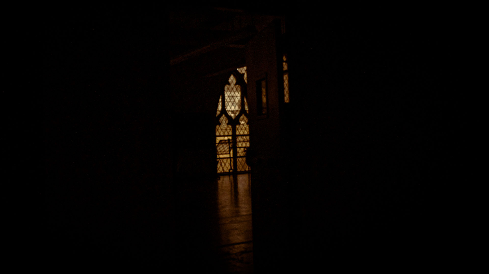
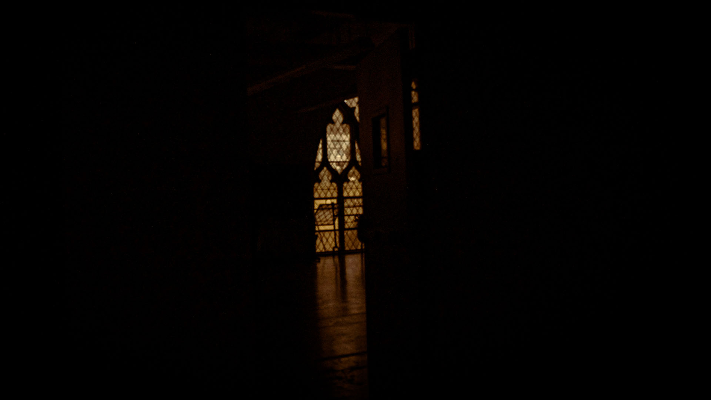

I choose this image for the 1920 x 1080 in selection because I wanted to challenge myself in using a image that has barely any light and see what I can do in order to enhance the main object: the window. I really like the Thomas Hall architecture and choose to take a picture of the dance room window. The images only source of light is the light from the window so I used color grading to change the lighting to orange-redish. I had to use the vignette (+25~ in black) tool to make sure when I added clarity, it didn’t make the black background grey or have this weird spotted look.